課程作業「LINE Bot 改善版」 · 記錄於 2026-10-12
做什麼：把 LINE 群組變成朋友的共享相簿。大家在群組傳照片，Bot 自動存下來；輸入「回顧」用輪播卡片看最近幾天的照片。靈感來自 Retro（Photos with Friends）的「小圈子、低壓力分享」。
指令：說明、回顧（最近 7 天）、回顧 N（最近 N 天）。
技術：Python、FastAPI、line-bot-sdk、SQLite、Flex Message Carousel、cloudflared tunnel。
421fbe6
收照片、回顧最近 7 天、說明。實機測試，找出不足。cf7ef04
加入輸入檢查與提示、私聊限制，實機測試。74a1029
先讓 OpenCode 檢查程式、列出改善清單，挑選 4 項小而安全的修改，實機測試。3ceb823
README、計畫書、測試紀錄與截圖上傳；撰寫這個頁面。第一版能存照片、顯示最近 7 天輪播、顯示說明。但實測時發現幾個明顯的不足：
| 輸入 | 第一版的反應 | 問題 |
|---|---|---|
回顧 3 | 回覆「收到訊息：回顧 3」 | 不能指定天數，被當成普通文字 |
哈囉 | 回覆「收到訊息：哈囉」 | 只是重複使用者的話，沒有引導 |
| 貼圖 | 沒有任何回應 | 使用者不知道 Bot 有沒有收到 |
| 私聊傳照片 | 照片被存下來 | 相簿本來應該屬於群組 |
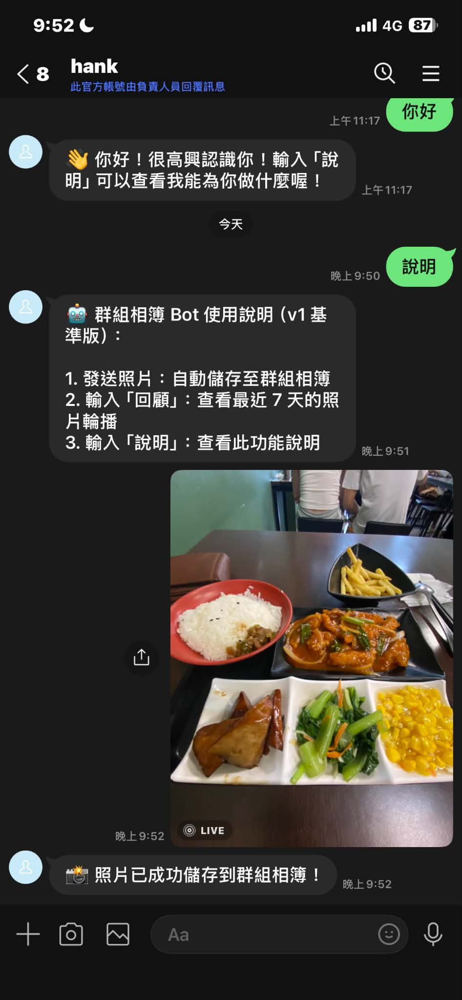
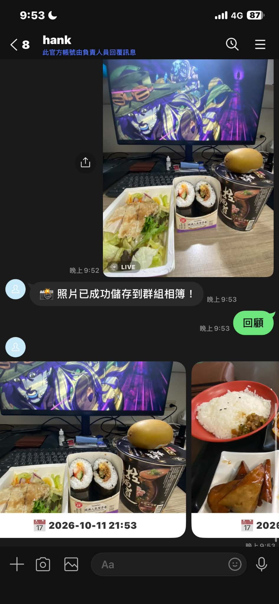
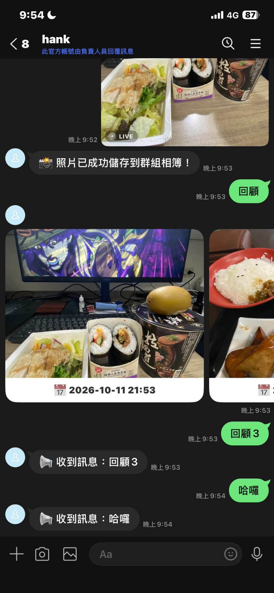
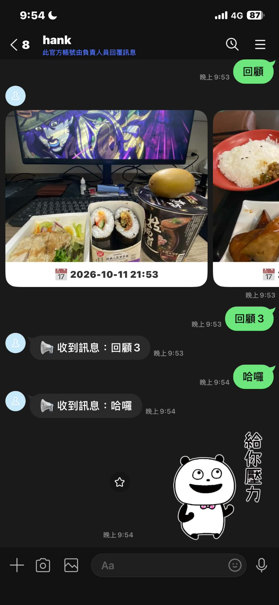
針對第一版的不足，請 Antigravity 加入：回顧 N 解析天數、天數格式錯誤提示、不認識的文字提示、不支援訊息類型提示、私聊使用提示。
| 測試 | 結果 |
|---|---|
回顧 abc、回顧 0 | 部分通過：提示正確，但範例文字多出反引號 ` |
| 傳貼圖 | 通過（影片、語音未測） |
| 群組輸入「哈囉」 | 通過 |
回顧 3、回顧 | 部分通過：都出現輪播，但測試照片都是同一天，無法證明較舊的照片會被過濾 |
| 私聊傳照片、私聊回顧 | 通過：提示要在群組使用 |
| 純空白訊息 | 未實測：LINE 無法送出純空白 |
| 一則訊息含三行 | 被當成一個指令，回覆無法辨識（記為已知限制） |
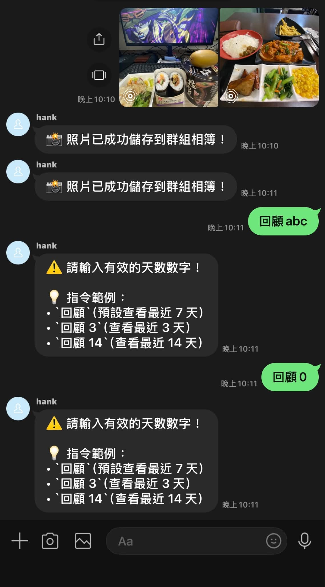
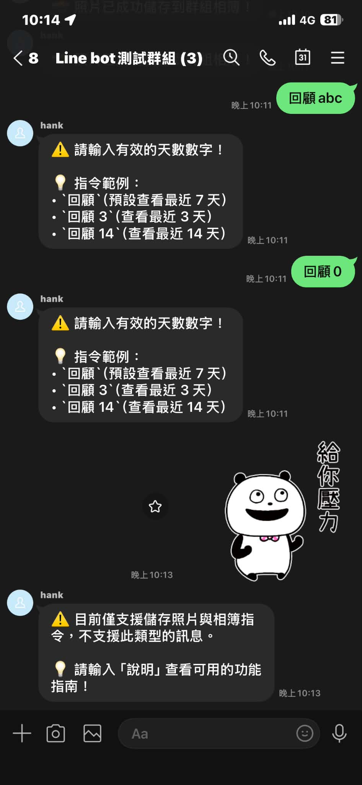
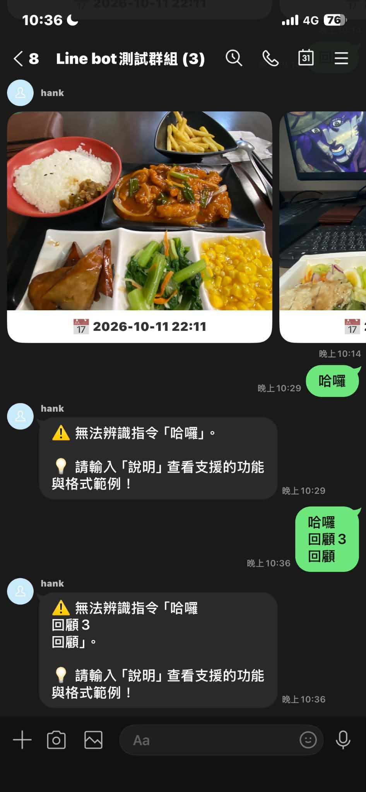
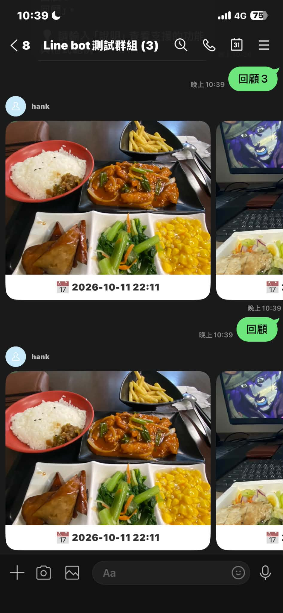
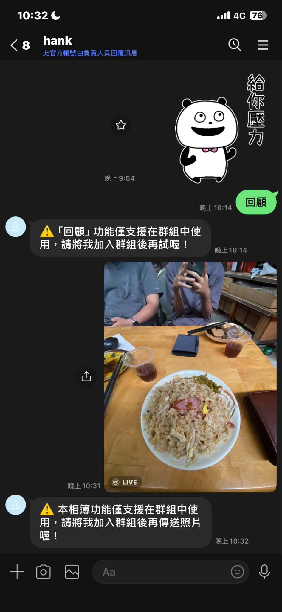
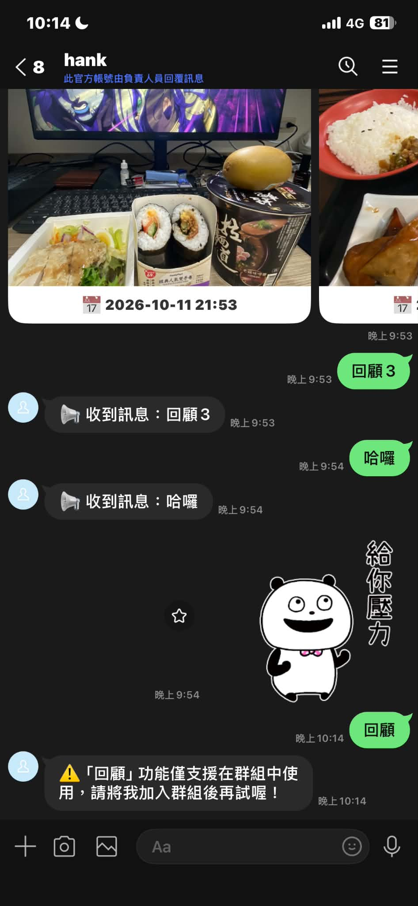
完整的測試表格見 測試紀錄。
老師口頭提到可以用 OpenCode 搭配開源模型來修 Bot。這次我在自己的電腦安裝 OpenCode，使用它內建的免費模型（Big Pickle）。
main.py（並明確要求不要讀取 .env），列出可以改善的地方。它列出 10 項錯誤處理與一些程式整理建議。BASE_URL 不是 https，印出警告。git status 只有 main.py 被改，再重啟伺服器，在 LINE 實測，通過後才 commit 並 push。把 callback 拆成多個函式等大改動，容易改壞已經測好的功能，也會讓前面的測試紀錄失效，所以列為未來改善。
回顧 abc 的提示不再有反引號、回顧 3 輪播正常。
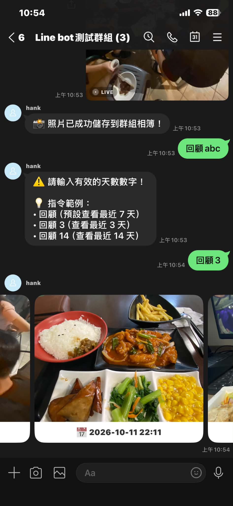
沒有實測的部分：照片下載失敗的提示、LINE 重送時不重複寫入、BASE_URL 非 https 的警告。這些很難在 LINE 上人為製造，所以只做了程式修改，不能算通過。
| 問題 | 解法 |
|---|---|
| LINE 後台頁面很多，找不到 Messaging API 設定 | 從 Official Account Manager 的設定進入 Messaging API 頁面，才能取得 channel 資料 |
| cloudflared 免費網址每次重開都會變 | 網址變了就同時更新 .env 的 BASE_URL 和 LINE 的 Webhook 網址，並重啟伺服器 |
| 一次貼三行指令，Bot 當成一個指令 | 每則訊息要單獨送出；記為已知限制 |
| 提示文字出現反引號（LINE 不會渲染 Markdown） | 測試時發現，第三輪由 OpenCode 移除 |
| PowerShell 擋住 npm 腳本 | 以 Set-ExecutionPolicy -Scope CurrentUser RemoteSigned 放寬目前使用者的限制 |
重新啟動時缺少套件（No module named 'dotenv'） | 執行 python -m pip install -r requirements.txt |
截圖檔名變成 .png.jpg、截圖含有真人姓名 | 統一改成 .jpg；含姓名的那張已從最新版專案移除（Git 歷史紀錄中仍留有舊版），其他截圖未拍到人臉 |
| 工具 | 做了什麼 |
|---|---|
| Claude | 構想討論、計畫書草稿、操作步驟說明、README／測試紀錄／本頁的文字草稿 |
| Antigravity | 第一版基準版本與第二版改善的程式 |
| OpenCode（Big Pickle） | 第三輪的程式檢查與修改 |
| 我自己 | 設定 LINE 頻道與通道、所有實機測試、決定要改哪些項目、確認修改範圍、commit 與 push |
文件裡的測試結果都以我實際在 LINE 上看到的畫面為準，沒有實測的項目都標註為「未實測」。
callback 函式偏長，之後可拆成多個處理函式，並補上正式的 logging。